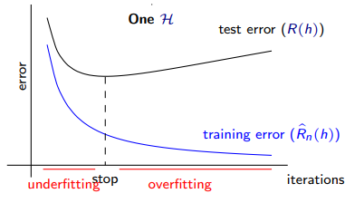

OUTLINE
This part of the blog will focus on reviewing Machine Learning (ML) fundamentals, specifically:
Components of Learning
The map below shows the components of learning and how they relate to allow a ML model to "learn".
We define the Domain to be the dimensionality of the data x, which are also called its' features. For supervised learning, we have true output labels, y defined for each input, x. We feed the input and output labels (x, y) into the model, often in batches, to learn from. This is shown by the Learners arrow. The target function, f, is unknown and it is the goal of the ML model to learn this function, i.e. to get g --> f.
One way to describe a model is through its' hypothesis class, H, which defines the set of possible configurations a model can choose from. Thus it can be seen as a way to limit how well (or too well!) a model can reach its goal as defined above. It is hoped that the model will choose the best configuration to reach this goal through learning.
The error function and error minimisation are the primary ways an ML model learns. For each task and scenario, we choose these to give the so that it can track how well it is learning (error function) and optimise itself (error minimisation) to reach its goal.
Perceptron and Neural Networks
The perceptron, pictured below, was insipred by the biological neuron found in the brain. It consists of weights, w, multiplied by a data point, x, through an activiation function, theta(w^Tx), to its output y_hat.

The most basic neural network is essentially a stacked version of the perceptron, i.e. a multi-layer perceptron model with activation functions at each node. The structure is shown in the image below.
We can see that each node is connected to all of its previous layer nodes. One layer is the veritcal combination of nodes, where the first layer is the input data x. Each line represents the multiplacation of a weight, w_ij and the output of the previous node s_ij (the i and j notation is not shown in the diagram, but let a layer be defined by i and vertical location of node be j.)
The "forward pass" refers to the calculation of the outputs of each node, from left to right. It is the way an input data point is mapped to an output. The dimension of the output depends on the task; the above picture has an output dimensionality D_h = 1 which is commonly used in binary classification or regression tasks. The forward pass is essentialy a scaled up version of the perceptron description in the first paragraph. A worked example of a forward pass on an MLP is shown below.

Gradient Descent and Backpropagation
Gradient descent is a general method for non-linear optimization. It is often used in ML when a model doesn't have a closed form solution, for example in neural networks. It is the fundamental way in which models optimise to reach their goal, and forms a part of the wider backpropagation algorithm. Gradient descent in its simplest form is formulated as: w_{t+1} = w_t + mui*v, where v is the normalised direction for finding the local minimum error and mui is the learning rate. The learning rate affects how many steps it takes to find the local error minimum. The graphs below show how different learning rates impact the speed of convergence.
Backpropagation is the fundamental way neural networks learn and comprosises of all the discussed topics. The algorithm is as follows:
- Initialise weights w_ij at random
- For t = 1,2...K:
- Forward pass: Compute all x_j
- Backward pass: Compute all delta_j
- Gradient Descent: w_ij = w_ij - mui*x_y*delta_j
- Return final weights w_ij
Learning Curves
Underfitting and overfitting are problems associated with ML models and their affect can be shown with learning curves. Underfitting is when a model has not learnt all the features it needs to reach its goal of approximating the underlying function. The most prominent reasons for underfitting are:
Overfititng occurs when the model begins to learn the noise of the target function instead of the features. The most prominent reasons for overfitting is:
Thus, the optimal point at which to stop training the model, i.e. stop learning, is at the intersection of underfitting and overfitting. This can be measured through the point at which the test/validation error begins to increase but the training error decreases. This is shown in the learning curves below.
Regularisation
A popular tool to aid in ML model learning is regularisation. Regularisation enforces an "overfit penalty" on the error function in an attempt to guide the model to the optimal point on the learning curve as described previously.
There are various regularisation techniques, for example L2-Loss restricts the possible w weights to within a circle of values. However, they are all based on a fundamental premise: Occam's Razor. Occam's Razor essentially states that simpler is usually better. This is based on the scientific notion that noise is not smooth, and an ML model's learning seeks to ignore noise. Regularisation Thus incentivises the model's learnt function towards smoother, simpler functions.
Regularisation introduces another(s) hyperparameter, lambda, to the model. This hyperparameter controls how much weighting the model attributes to regularisation. The effect of different lambda values on learning is shown below.